스노보드 가게에서 상점 프로그램 회사로
영상은 숫자 두 줄로 시작해요. 2022년 말부터 2025년 말까지 쇼피파이 직원은 11,600명에서 7,600명으로 줄었어요. 같은 기간 쇼피파이 상점들이 판 금액은 1,972억 달러에서 3,784억 달러로 늘었어요. 사람은 3분의 1이 빠졌는데 장사는 거의 두 배가 된 거예요. 영상은 이 결과가 20년 동안의 결정 여섯 개에서 나왔다고 보고, 그 결정을 하나씩 따라가요.
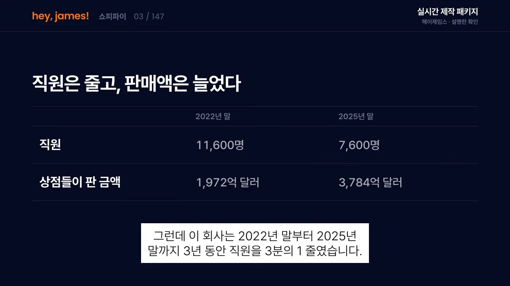
몸으로 배운 개발자
창업자 토비 뤼트케는 16살에 학교를 그만두고 독일에서 프로그래머 도제 과정을 밟았어요. 지멘스 자회사였는데, 첫해에는 코딩을 시키지 않았어요. 구내식당, 회계, 창고, 안내데스크를 석 달씩 돌았어요. 월급은 700마르크, 당시 400달러쯤이었어요. 토비는 나중에 블로그에 이렇게 썼어요.
겪어보지 않은 문제는 이해할 수도 없었고 해법을 떠올릴 수도 없었다, 나는 몸으로 배우는 사람이었다.
— 영상 01:03
이 성향이 뒤에 나오는 결정들을 설명하는 실마리예요. 쇼피파이는 시장 조사가 아니라 창업자가 직접 부딪힌 불편에서 나왔거든요.
배경색 하나 때문에
캐나다로 건너간 토비는 독일 회사의 금융 백엔드 일을 원격으로 하다가 지쳤어요. 그래서 프로그래밍을 접고 좋아하던 스노보드를 온라인으로 팔기로 했어요. 문제는 쇼핑몰 프로그램이었어요. 당시 나와 있던 걸 다 써 봤는데, 아래 슬라이드의 한 문장이 결정타였어요. 따로 디자인을 받아 놨는데 Yahoo Stores에서는 상단 배경색 하나 바꾸는 게 전부였다는 거예요.
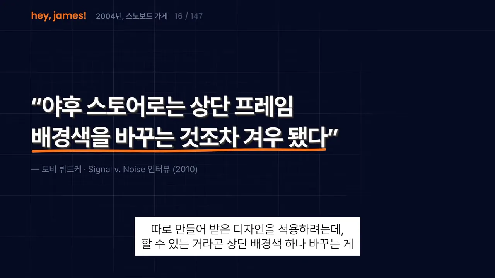
그때 친구가 메신저로 소식을 보내 줬어요. 2004년 7월에 Ruby on Rails가 막 공개됐다는 내용이었어요. 써 보고 나서 토비는 지겨웠던 게 프로그래밍이 아니라 재미없는 도구였다는 걸 알았어요. 그리고 넉 달 동안 자기 상점 프로그램을 직접 짰어요.
잘 알려지지 않은 사정도 하나 있어요. 아래 표처럼 토비는 취업 비자가 없어서 캐나다에서 취직할 수 없었어요. 반대로 창업을 막는 법은 없었어요. 창업이 여러 선택지 중 하나가 아니라 사실상 유일한 길이었던 거예요.
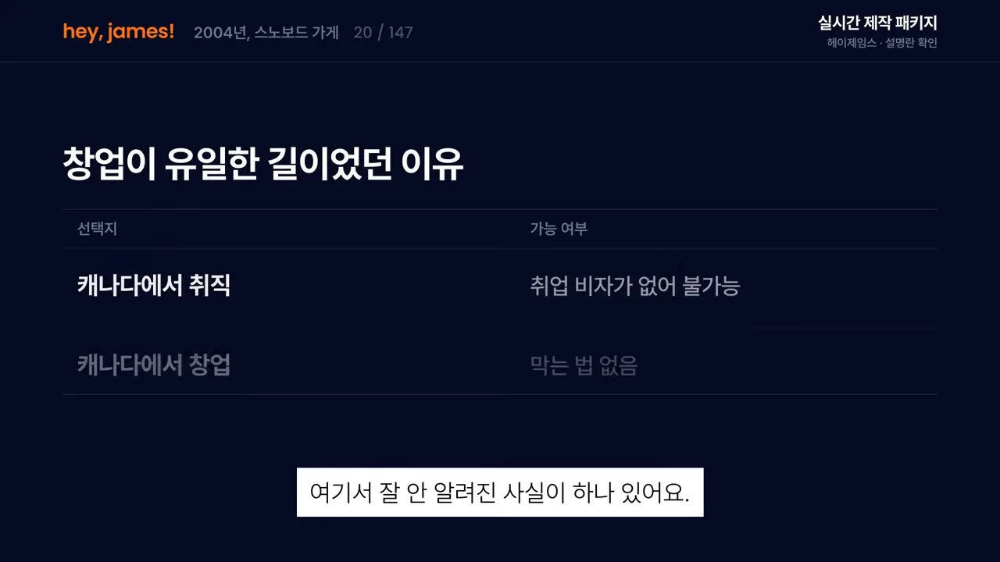
첫 번째 결정 — 스노보드 대신 상점 프로그램을 팔기
첫 겨울에 스노보드를 40대쯤 팔아 조금 남겼어요. 2005년 1월 31일 Rails로 만든 상점을 열던 날, 토비는 Rails 커뮤니티에 "더 좋은 도구를 가졌다는 이유만으로 작은 사업자가 큰 기업과 경쟁하거나 앞설 수 있는 시대"라는 글을 올렸어요. 이 문장이 나중에 회사의 미션 문장이 돼요.
그리고 첫 번째 결정이 나와요. 아래 표는 바뀐 것을 두 줄로 보여 줘요. 파는 것이 스노보드에서 온라인 상점 프로그램으로, 손님이 스노보드 사는 사람에서 온라인으로 파는 사람으로 바뀌었어요.
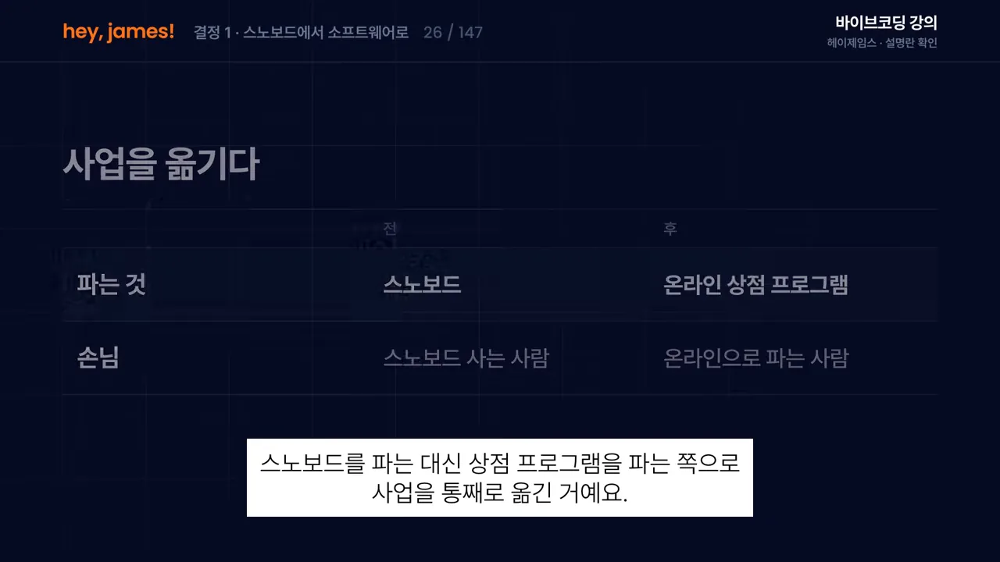
이렇게 2006년에 쇼피파이가 나왔어요. 이 문서는 영상 순서대로 여섯 결정을 따라가요. 아래 그림은 영상이 꼽은 결정이 언제 나왔는지 한 줄로 놓은 거예요.
월 0원 수수료 모델과 남이 돈 벌게 두기
두 번째 결정 — 월 이용료 0원
지금 쇼피파이는 월 25달러부터 시작하는 구독 서비스예요. 그런데 2006년 출시 때는 달랐어요. 아래는 영상이 보여 준 2006년 7월 홈페이지 보관본이에요. 노란 칸 안의 후기 문구들 아래로 가격 조건이 있었는데, 영상이 읽어 준 내용은 세 줄이에요. 가입비 없음, 월 이용료 없음, 판매가 성사되면 그 금액의 3%.
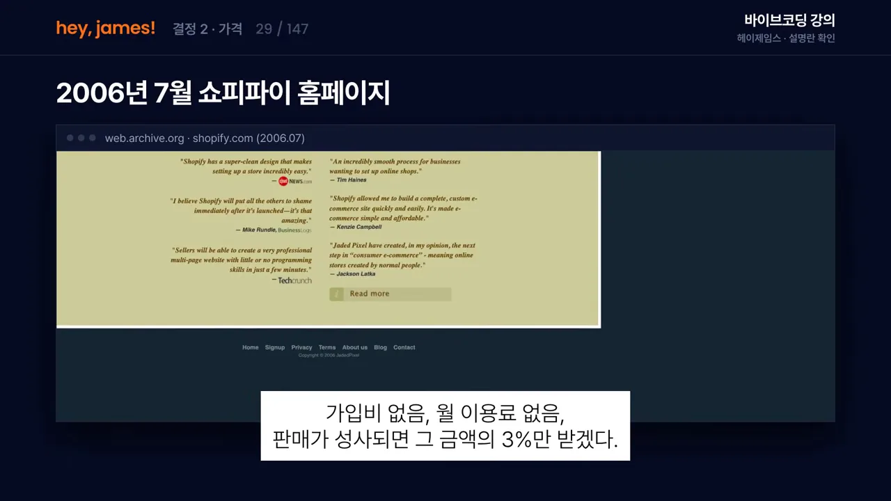
한 달에 1만 달러를 넘게 팔면 그달 나머지 판매는 2%로 자동으로 내려 줬어요. 페이지에는 이런 문장이 박혀 있었어요.
여러분이 못 벌면 저희도 못 법니다.
— 영상 03:48
원래 계획은 이게 아니었어요. 출시 반년 전 예고 페이지에는 요금제 두 개와 무료 체험이 적혀 있었어요. 출시 직전에 요금제를 아예 없애고 순수 수수료 모델로 뒤집은 거예요. 아래에서 영상이 말한 규칙대로 직접 계산해 볼 수 있어요.
쇼피파이가 받는 돈 0달러
판매액 대비 0%
- 판매액을 0으로 내려 보세요. 받는 돈도 0달러예요. '못 벌면 저희도 못 번다'는 말 그대로예요.
- 1만 달러에 맞춰 보세요. 받는 돈은 300달러, 딱 3%예요.
- 2만 달러로 올려 보세요. 넘은 1만 달러에는 2%만 붙어서 전체로는 2.5%로 내려가요. 많이 팔수록 비율이 낮아져요.
이 구조는 회사 돈 쓰는 방식에도 남았어요. 아래 막대처럼 상장 전까지 투자로 받은 돈이 9,000만 달러인데 실제로 쓴 돈은 2,980만 달러였어요. 받은 돈의 3분의 1만 쓰고 상장한 거예요. 스노보드 법인을 세운 뒤 흑자가 나기까지 4년이 걸렸고, 그때 직원은 열세 명이었어요.
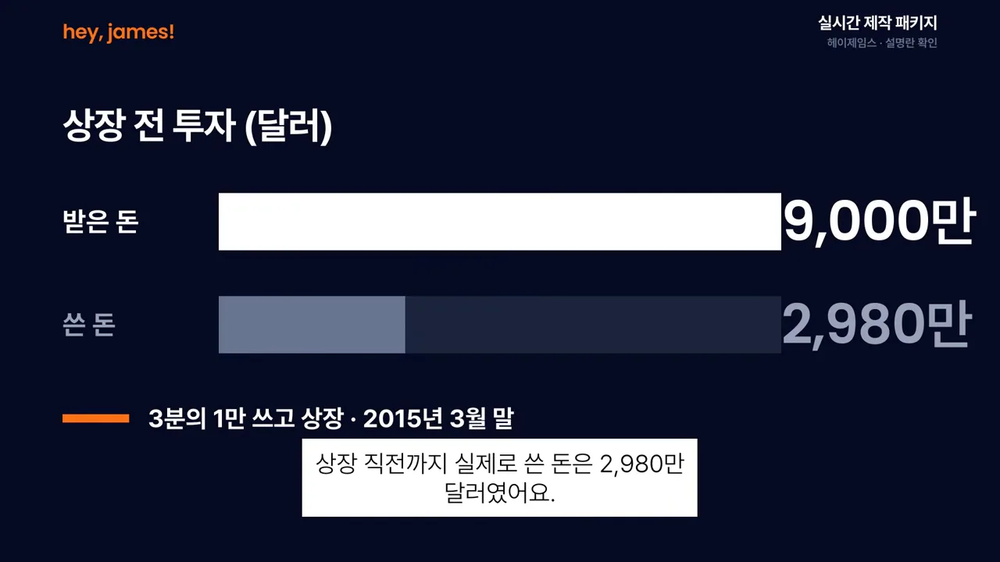
세 번째 결정 — 남이 돈을 벌게 두기
2009년에 앱스토어를 열 때 등록된 앱은 아홉 개였어요. 2015년 상장 때는 900개가 됐고, 상인의 75%가 앱을 하나 이상 깔아 쓰고 있었어요. 상장 서류에는 이런 문장이 있어요.
장기적인 가치를 만들기 위해 단기 매출 기회를 포기했다.
— 영상 04:57
기술에서도 같은 판단이 보여요. 상인이 상점 디자인을 직접 고치게 하고 싶었지만, 남이 쓴 코드를 회사 서버에서 그대로 돌릴 수는 없었어요. 그래서 서버에서 실행되지 않는 화면 꾸미기 전용 언어 Liquid를 만들었고, 2006년부터 20년 넘게 쓰고 있어요. 이렇게 쇼피파이를 만들다 필요해서 짠 코드를 떼어 오픈소스로 공개하는 게 이 회사의 반복되는 패턴이에요. 아래 표가 영상이 든 세 가지예요.
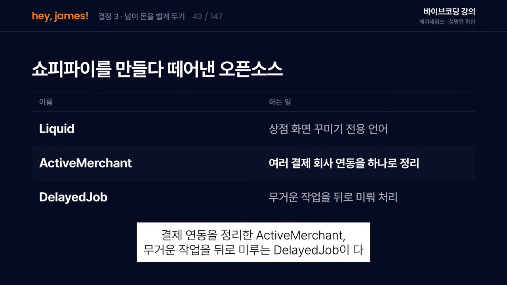
상인을 모으는 방식도 광고가 아니었어요. 2010년에 팀 페리스와 함께 창업 대회를 열었어요. 온라인 상점을 열고 두 달 동안 가장 많이 판 사람이 이기는 방식이었고, 1회에 새 사업체가 1,400개 가까이 생기고 주문이 66,503건 나왔어요. 장사를 시작할 이유를 만들어 준 거예요.
이렇게 판을 깔아 두면 어떤 사람이 나오는지 보여 주는 사례가 아래 표예요. 할리 핑켈스타인은 대학 로고 티셔츠를 팔던 137번째 상점 주인이었어요. 2010년 쇼피파이에 합류해 2016년 COO(Chief Operating Officer), 2020년 사장이 됐어요.
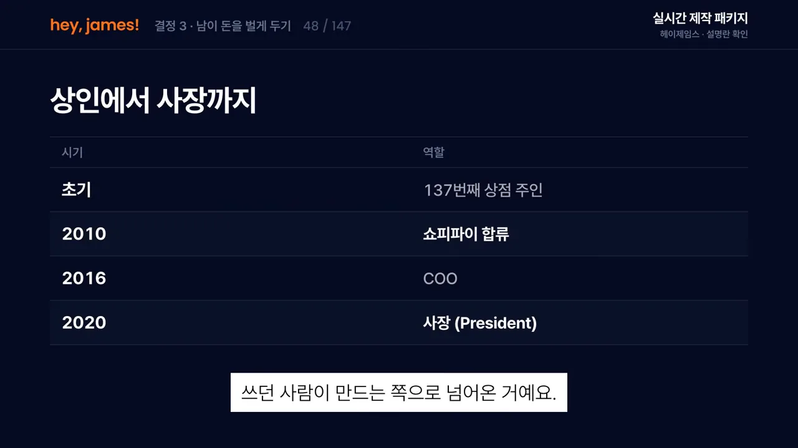
지분 6%로 의결권 40%를 지키는 법
쇼피파이는 2015년 5월 21일에 상장했어요. 한 주에 17달러로 1억 3,090만 달러를 모았고, 상장 시점 회사 가치는 약 12억 6,500만 달러였어요. 영상이 눈여겨본 건 그때 누가 주식을 얼마나 들고 있었느냐예요.
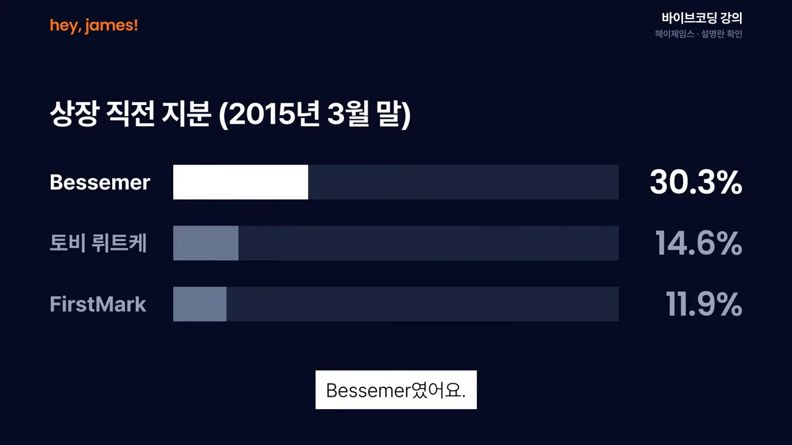
네 번째 결정 — 주식을 두 종류로
그래서 상장 때 주식을 두 종류로 나눴어요. 이런 구조를 차등의결권이라고 불러요. 아래 표를 가로로 읽으면 돼요. 새로 시장에 나온 주식은 1주에 1표, 창업자와 기존 투자자 주식은 1주에 10표예요. 시장에 풀린 지분은 10.3%인데, 표로 세면 1.1%밖에 안 됐어요.
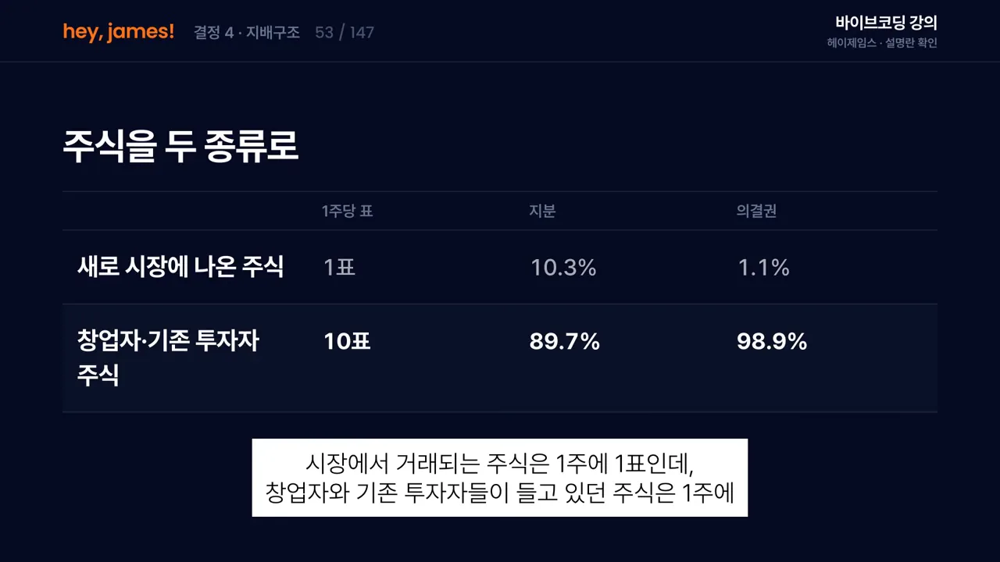
2022년의 창업자 주식
2022년에는 한 걸음 더 나갔어요. 회사가 창업자 주식이라는 걸 새로 만들어 토비에게 주자는 안건을 주주총회에 올렸어요. 아래 표가 그 주식이 하는 일이에요. 배당이나 팔아서 받는 돈은 없어요. 대신 창업자 쪽 의결권이 40% 아래로 내려가지 않게 표를 채워 줘요. 회사가 새 주식을 아무리 찍어도 창업자 의결권은 희석되지 않아요.
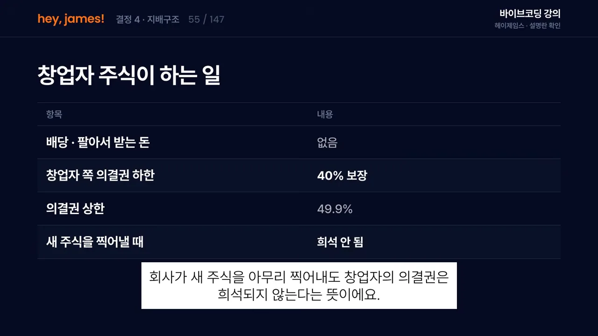
그 결과 2025년 말 토비의 지분은 6% 정도인데 의결권은 40.09%예요. 아래 그림은 상장 때와 2025년 말의 지분과 의결권을 나란히 놓은 거예요. 지분 막대는 짧아졌는데 의결권 막대는 40% 근처에 머물러요.
거의 반반으로 갈린 표결
이 안건은 아슬아슬하게 통과됐어요. 아래 표의 첫 두 줄이 같은 안건을 두 가지로 센 결과예요. 전체 주주 기준으로는 72.35%가 찬성해 무난해 보여요. 그런데 창업자 본인과 가족을 뺀 나머지만 세면 찬성 53.68%, 반대 46.32%였어요. 3.7%포인트만 뒤집혔으면 부결이었어요.
227조 원의 실체, 순이익보다 영업이익
227조 원이라는 회사 가치는 한 번에 쌓인 숫자가 아니에요. 아래 그래프의 세 점을 보면 돼요. 상장 때 12.7억 달러였던 시가총액이 2021년 11월 2,130억 달러까지 올랐어요. 코로나로 온라인 쇼핑이 폭증하던 때였어요. 그리고 11개월 뒤 2022년 10월에는 330억 달러로, 고점보다 85% 가까이 빠졌어요.
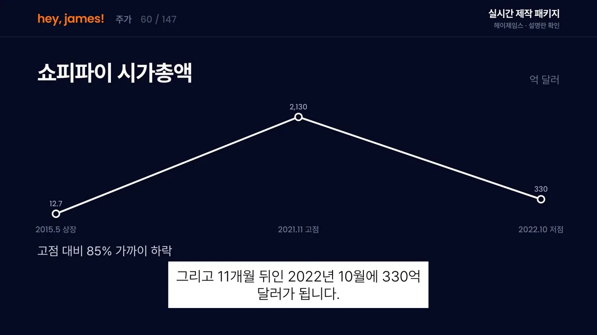
그 고점을 다시 넘은 건 2025년 10월 29일, 3년 11개월 만이었어요. 2026년 9월 15일 종가로는 다시 내려와 시가총액이 1,670억 달러예요. 영상은 주가와 별개로 회사가 실제로 번 돈을 따로 봐야 한다고 말해요.
순이익의 98%가 주식 평가이익
재무제표를 연도별로 놓으면 이상한 해가 두 번 보여요. 2021년에는 순이익이 29억 달러를 넘었는데, 2022년에는 순손실이 34억 달러를 넘어요. 1년 만에 63억 달러가 뒤집혔어요. 장사를 잘하다 갑자기 못하게 된 게 아니에요. 아래 표가 2021년 순이익을 둘로 쪼갠 거예요.
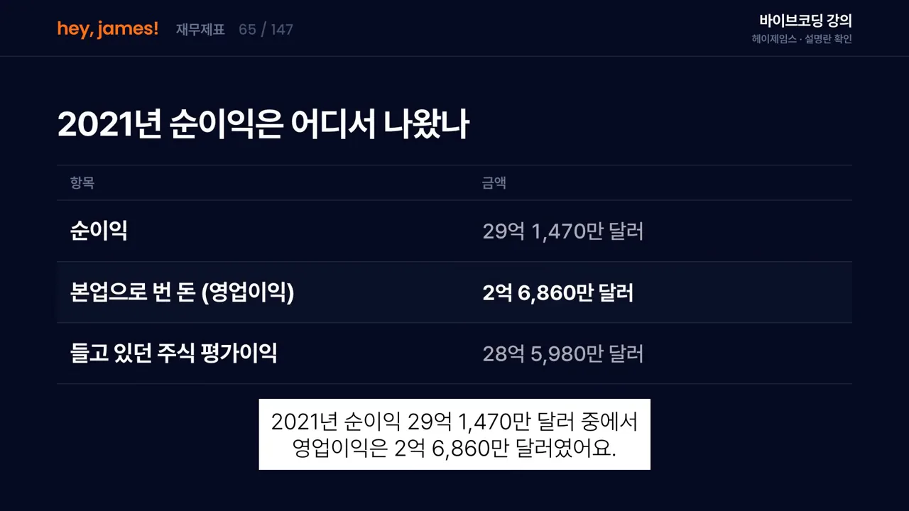
2022년에는 정확히 반대로 일어났어요. 순손실 34억 6천만 달러 가운데 영업손실은 8억 2,200만 달러였고, 29억 1,900만 달러는 같은 주식이 내려서 생긴 손실이었어요. 두 해 사이에 움직인 63억 7천만 달러 중 91%가 쇼피파이가 투자해 둔 두 회사의 주가 등락이었어요.
2023년은 더 헷갈려요. 영업손실이 14억 1,800만 달러인데 순이익은 1억 3,200만 달러 흑자로 찍혀요. 본업에서는 1조 9천억 원 넘게 손해를 봤는데, 서류 맨 아랫줄에는 이익이 났다고 적힌 거예요. 아래 그림은 영상이 준 네 해의 영업이익과 순이익을 같은 눈금으로 나란히 그린 거예요.
그래서 영상은 실적을 보는 순서를 못 박아요. 손익계산서는 맨 아래 순이익이 아니라 영업이익 줄부터 봐야 해요. 영업이익은 본업으로 번 돈이고, 순이익에는 본업과 상관없는 것이 섞여 들어오거든요. 쇼피파이는 그 섞인 정도가 98%까지 갔던 회사예요.
이 순서로 보면 흔한 설명도 달라져요. '2020년 흑자 전환 뒤로 계속 잘됐다'가 아니에요. 상장 뒤 2020년에 처음 영업흑자를 냈고, 2022~2023년에 다시 영업적자였다가, 2024년부터 다시 흑자예요. 2025년은 영업이익 14억 6,800만 달러, 순이익 12억 3,100만 달러로 처음으로 순이익이 영업이익보다 작은 해였어요. 영상은 이 해를 회사 역사상 가장 깨끗한 실적이라고 불러요.
구독 회사가 아니라 결제 회사
재무제표를 한 겹 더 벗기면 회사의 정체가 달라 보여요. 아래 표에서 2013년과 2025년 줄을 비교해 보세요. 매출 중 구독이 76%에서 24%로 줄고, 상인이 팔 때마다 붙는 돈이 24%에서 76%로 늘었어요. 두 숫자가 정확히 자리를 바꿨어요.
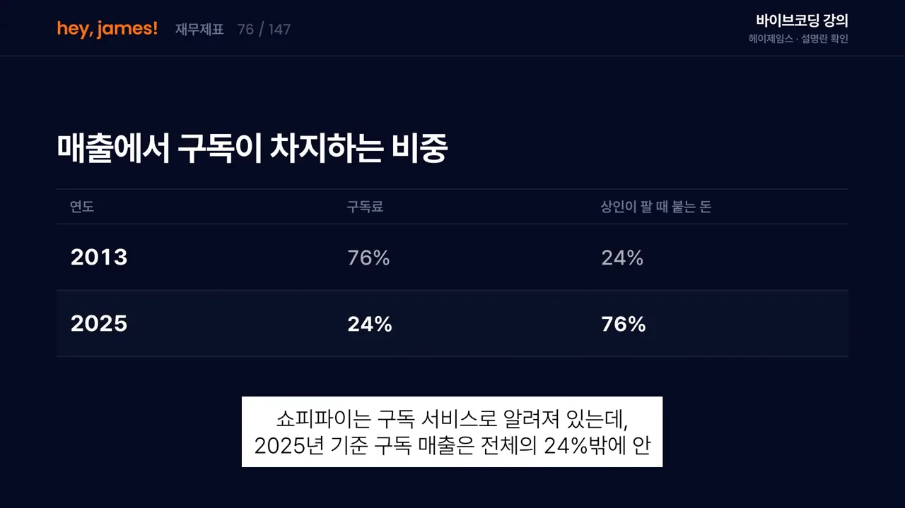
그중에서도 결제가 커요. 아래 표는 쇼피파이를 거쳐 팔린 금액 중 쇼피파이 자체 결제로 처리된 비중이에요. 2018년 40%, 2025년 66%, 2026년 2분기 68%로 계속 올라갔어요.
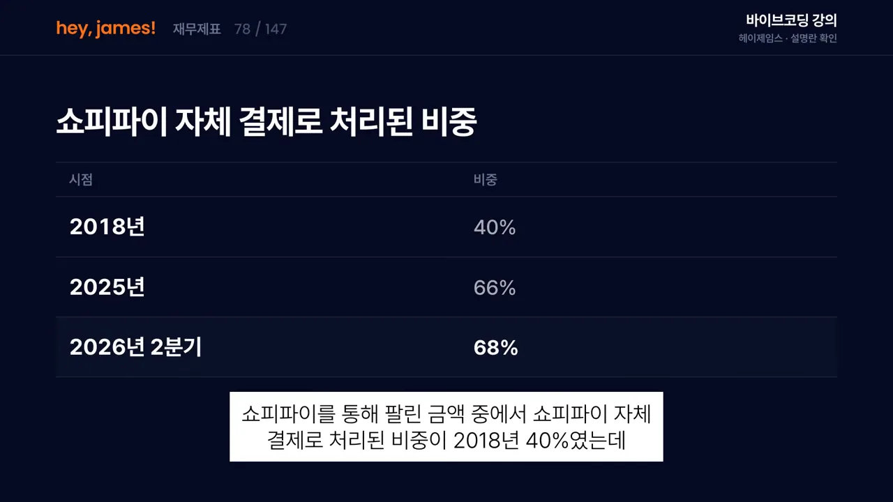
다만 남는 비율은 내려갔어요. 2017년에는 100만 원을 벌면 56만 원이 남았는데, 2025년에는 48만 원이에요.
물류 인수를 11개월 만에 접다
2022년과 2023년의 영업적자 뒤에는 다섯 번째 결정이 있어요. 회사가 물류를 직접 하려다 접은 일이에요. 2022년 7월 쇼피파이는 배송 회사 Deliverr를 19억 7,200만 달러, 우리 돈 2조 7천억 원쯤에 샀어요. 거의 전액 현금이었어요. 그런데 같은 달에 직원 10%를 내보냈어요. 회사를 사면서 사람을 줄인 거예요.
그때 토비가 전 직원에게 보낸 메일은 온라인 쇼핑 비중이 5년, 어쩌면 10년은 영구히 앞당겨질 거라는 데 베팅했다고 설명해요. 아래 슬라이드가 바로 이어지는 문장이에요.
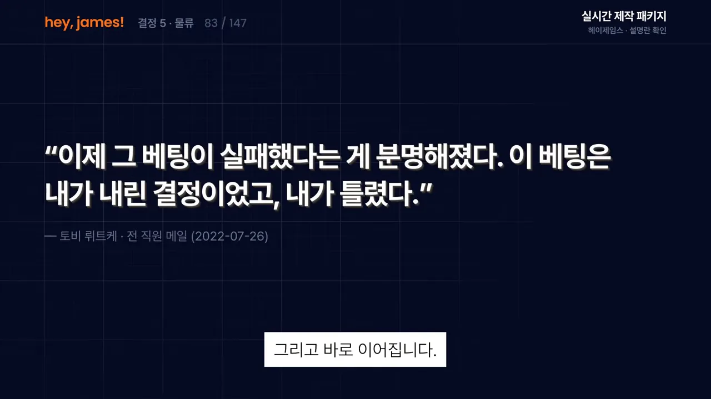
11개월 뒤, 값을 0으로 적다
11개월 뒤에 쇼피파이는 물류 사업을 전부 정리했어요. 회사를 살 때는 건물이나 장비 값보다 돈을 더 얹어 주는데, Deliverr에 얹어 준 금액이 14억 3,800만 달러였어요. 이걸 전부 손해로 적었어요. 산 지 1년도 안 된 회사의 값을 0으로 적은 거예요. 아래 표는 물류 사업을 Flexport에 넘기고 받은 것이에요. 현금은 0원, 받은 건 Flexport 지분 13%였어요.
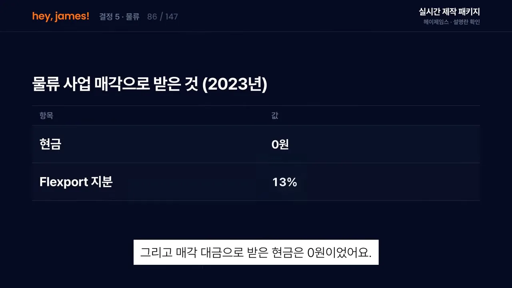
아래 그림은 들어간 것과 나온 것을 나란히 놓은 거예요. 두 칸 모두 영상이 말한 숫자만 썼어요.
메인 퀘스트와 사이드 퀘스트
두 번째 감원 메일에 나온 표현이 '메인 퀘스트와 사이드 퀘스트'였어요. 게임에서 본 줄기와 곁가지를 부르는 말이에요. 물류는 곁가지였다는 뜻인데, 이 표현 때문에 회사를 떠난 직원들이 자기가 곁가지 취급을 받았다고 느꼈다는 보도도 나왔어요.
결과만 놓고 보면 아래 표와 같아요. 직원은 2022년 말 11,600명에서 2025년 말 7,600명으로 34% 줄었어요. 같은 기간 상점들이 판 금액은 1,972억 달러에서 3,784억 달러로 거의 두 배가 됐어요.
도구는 고쳐 쓰고, 전제가 바뀌면 뒤집기
사람을 줄이면서 장사를 두 배로 키운 비결로 영상은 여섯 번째 결정, 도구를 다루는 방식을 꼽아요. 쇼피파이의 핵심 시스템은 2026년에도 2004년에 쓰기 시작한 Ruby on Rails로 돌아가요. 회사가 공개한 숫자로 이 시스템은 Ruby 코드 280만 줄짜리 한 덩어리예요. 서비스 전체가 하나의 프로그램으로 묶여 있다는 뜻이에요. 이런 구조를 모놀리스라고 불러요.
쌓인 코드 변경 기록이 50만 건이고, 엔지니어 3,100명 중 2,200명이 이 한 덩어리를 같이 고쳐요. 그러면서 하루에 40번씩 고친 걸 실제 서비스에 올려요.
블랙프라이데이의 한 덩어리
이 시스템이 가장 바쁜 날은 1년에 한 번 와요. 2025년 블랙프라이데이에 쇼피파이 상점들은 나흘 동안 146억 달러, 약 20조 원어치를 팔았어요. 아래 표는 가장 몰린 순간의 숫자예요. 누가 상품 페이지를 열거나 결제 버튼을 누를 때마다 서버에 신호가 한 번 가요.
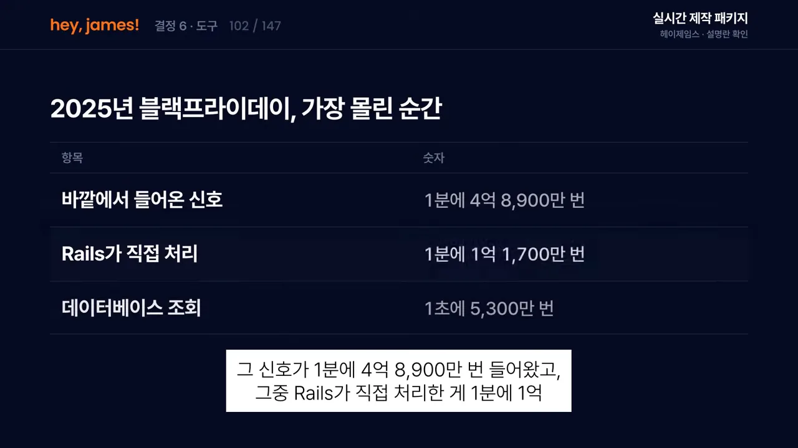
보통 이 정도 규모가 되면 시스템을 잘게 쪼개요. 쇼피파이는 쪼개지 않았어요. 대신 한 덩어리 안을 스물네 개 정도의 구역으로 나누고, 구역끼리 함부로 넘나들지 못하게 막는 도구를 직접 만들었어요. 아래 그림이 두 방식의 차이예요.
그 칸막이 도구에 대해 회사는 2024년에 돌아보는 글을 직접 올렸어요. 규칙 중 하나는 실패였다고 인정하고 없앴다는 내용이었어요. 영상은 성공만 말하지 않는 것이 이 회사 기술 블로그의 특징이라고 봐요.
2026년에는 거꾸로 도구를 줄인 일도 있었어요. 재고를 잠깐 잡아 두는 기능을 Redis라는 빠른 저장소로 돌리고 있었는데, 아래 화면의 글처럼 이걸 걷어 내고 원래 쓰던 데이터베이스로 되돌렸어요. 확인해 보니 느린 원인이 다른 데 있었거든요.
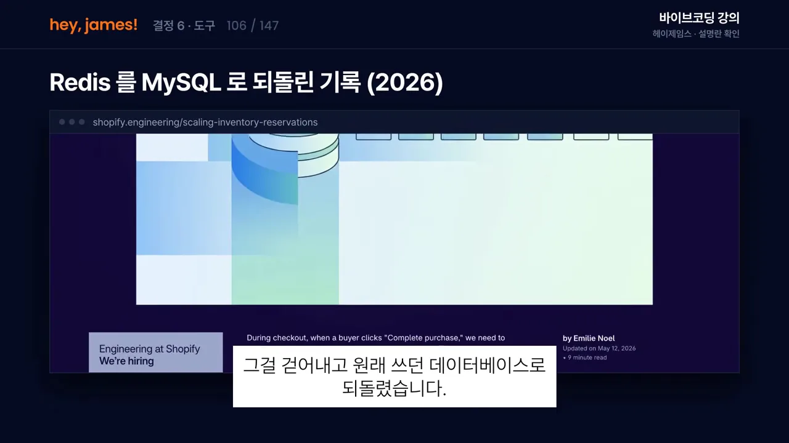
도구를 바꾸지 않고 고치기
쓰는 도구가 느리면 보통은 도구를 바꿔요. 쇼피파이는 도구를 고쳤어요. Ruby를 더 빠르게 돌리는 부품 YJIT(Yet Another Ruby JIT)를 직접 만들어 Ruby 본체에 넣었어요. 아래 화면의 숫자처럼 Ruby 3.4 기준으로 기존 방식보다 약 92% 빨라요.
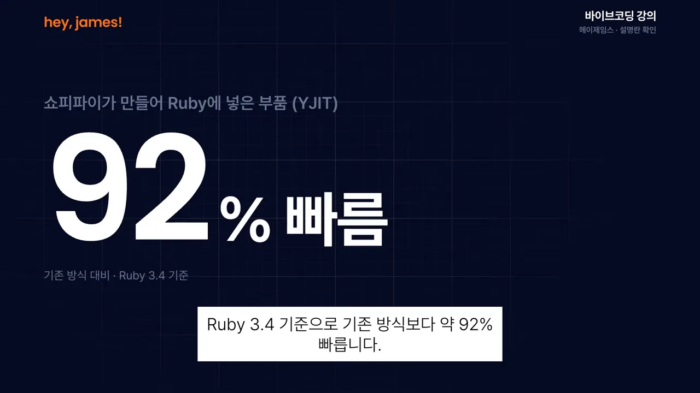
Rails를 만든 사람은 2024년에 쇼피파이 이사회에 들어왔어요. 2026년 3월에는 CEO(Chief Executive Officer) 토비가 직접 Liquid 성능을 높이는 코드를 올려 처리 속도를 53% 끌어올렸어요. 영상 진행자는 자기도 외주로 서비스를 만들 때 Rails를 주로 쓴다고 덧붙여요. 로그인, 데이터베이스, 파일 업로드, 무거운 작업 처리, 실시간 채팅이 기본으로 들어 있어 밖에서 붙일 게 적고, 그래서 AI가 헤맬 지점도 적다는 이유예요.
AI를 기본으로 — 2025년 4월의 메모
2025년 4월 토비가 사내 메모를 하나 썼어요. 밖으로 샐 조짐이 보이자 본인이 먼저 X에 전문을 올렸어요. 첫 문장은 이랬어요.
AI를 반사적으로 쓰는 것이 이제 쇼피파이의 기본 기대치다.
— 영상 16:33
아래 표가 메모에서 가장 논란이 된 부분이에요. 사람을 더 뽑기 전에 그 일을 AI로 왜 못 하는지부터 보여 줘야 해요. AI를 얼마나 잘 쓰는지가 인사 평가 질문에 들어가요. 그리고 셋째 줄처럼 CEO와 임원도 똑같이 적용받아요.
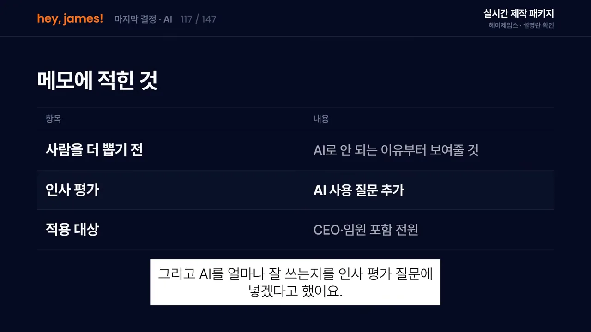
회사는 AI 코딩 도구 사용료에 상한을 두지 않았어요. 엔지니어링 총괄은 한 달에 1,000달러를 더 써서 10% 더 생산적이라면 너무 싼 거라고 말했어요. 엔지니어링 인턴은 2024년 25명에서 2025년 1,000명으로, 1년 만에 마흔 배로 늘렸어요.
2026년 9월, 네이티브로 돌아가다
2026년 9월 10일 쇼피파이 엔지니어링 블로그에 글이 하나 올라왔어요. 아래 화면의 두 칸이 그 내용이에요. 2020년에는 React Native로 한 번 만들어 iOS와 안드로이드 두 곳에 썼어요. 2026년 9월부터는 iOS와 안드로이드를 각각 네이티브로 만들어요.
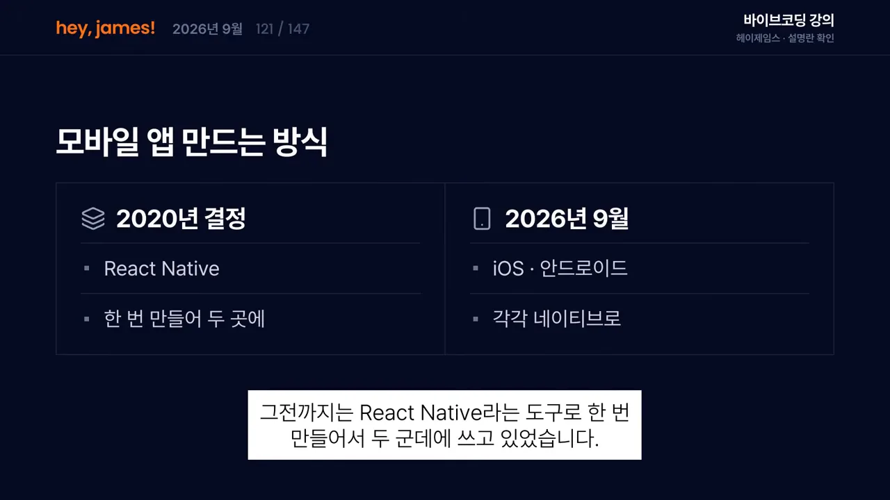
글이 밝힌 이유는 한 문장이에요.
LLM이 2020년 결정의 핵심 전제 하나를 바꿔놨기 때문에, 우리는 모바일 스택을 처음부터 다시 검토했다.
— 영상 17:45
아래 그림처럼 따져 보면 돼요. 2020년에는 같은 앱을 두 번 만드는 비용이 비싸서 한 번만 만들기로 했어요. 2026년에는 안드로이드 기능을 만들 때 iOS 버전을 참고 자료로 주면 AI가 만들어 줘요. 두 번 만드는 비용이 사라지자 결론도 바뀐 거예요.
더 눈에 띄는 건 시점이에요. 아래 표처럼 같은 저자가 2025년 1월 13일에는 'React Native의 미래는 밝다'고 썼어요. 2026년 9월 10일 글의 결론은 '네이티브가 미래다'였어요.
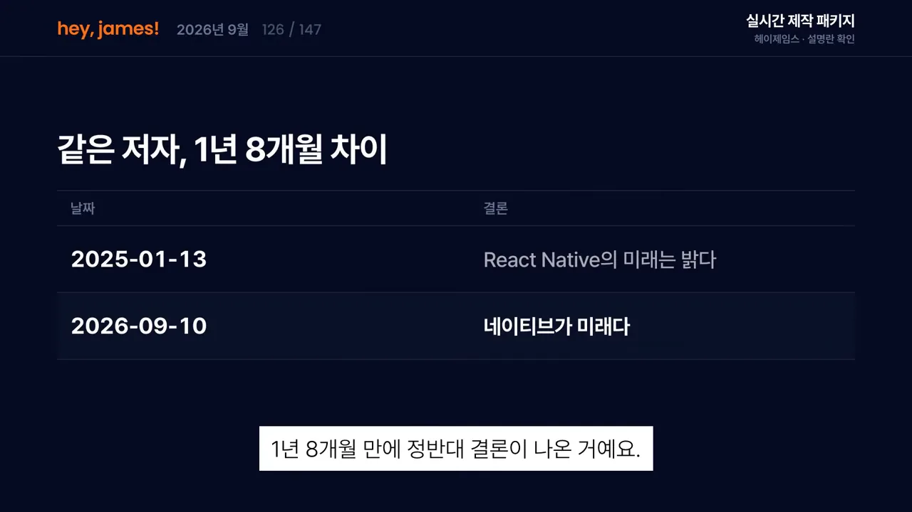
상인이 겪는 것, 그리고 배울 것
그렇다고 AI가 다 잘되고 있는 건 아니에요. 2025년 9월 쇼피파이는 OpenAI와 함께 ChatGPT 안에서 바로 결제하는 기능을 내놨어요. 2026년 3월 OpenAI가 이 기능을 접었어요. 실제로 연결한 쇼피파이 상점이 열두 곳 남짓이었고, 사람들이 ChatGPT에서는 구경만 하고 구매는 원래 사이트에 가서 했다는 이유였어요.
AI가 데려온 주문의 값
영상은 상인 쪽 이야기도 해야 공평하다며 질문을 던져요. AI가 주문을 데려다주면 그 값은 누가 낼까요? 아래 표는 2026년 1월 상인 커뮤니티에 공유된, 쇼피파이가 안내한 AI 채널별 추가 수수료예요. Google AI Mode와 Microsoft Copilot은 추가 수수료가 없고, ChatGPT만 4%예요.
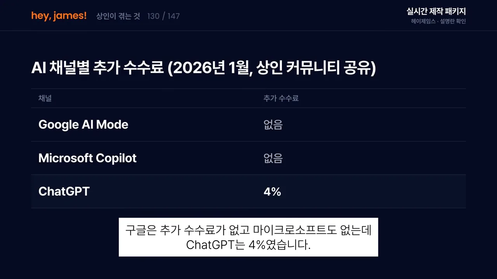
남의 플랫폼 위에 가게를 올린다는 것
쇼피파이 상인들은 원래 결제 화면 코드를 직접 고쳐 쓸 수 있었어요. 아래 화면은 슬라이드가 '결제 화면 코드 지원 종료 안내'로 소개한 개발자 문서예요. 위쪽 파일 목록과 아래 코드 상자에 나오는 checkout.liquid가 상인이 고치던 결제 화면 틀이에요. 쇼피파이는 이걸 2025년과 2026년 두 번에 걸쳐 막았어요.
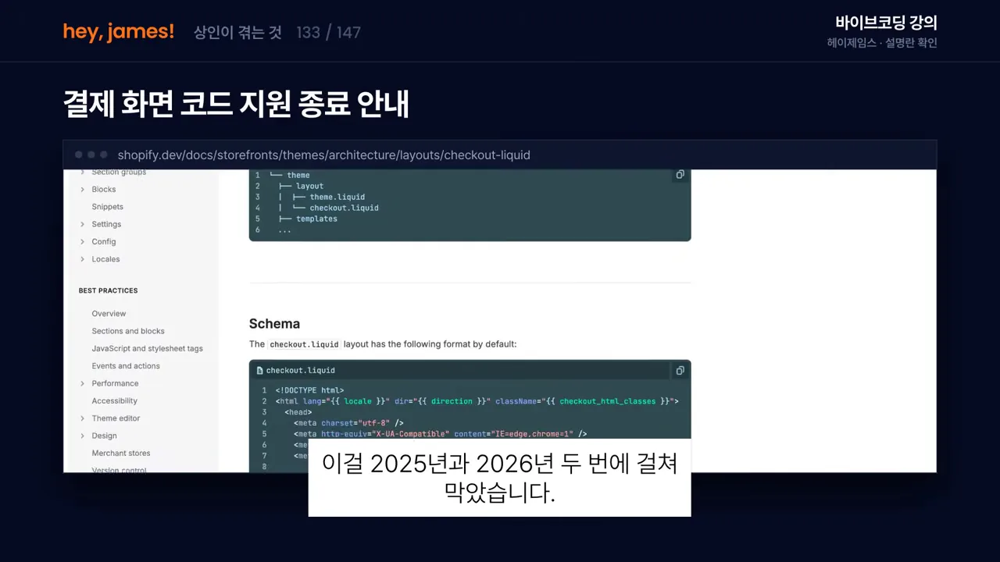
한국에서 쇼피파이를 쓴다면 알아 둘 게 하나 더 있어요. 아래 숫자처럼 쇼피파이 자체 결제(Shopify Payments)가 되는 나라는 40개국 정도예요. 일본, 싱가포르, 홍콩, 아랍에미리트는 들어 있고 한국은 빠져 있어요.
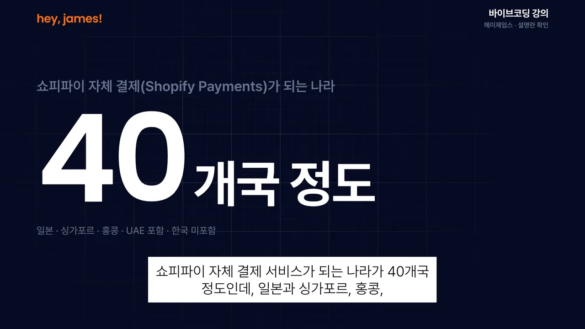
여기서 배울 것 네 가지
영상은 20년의 결정에서 가져갈 것을 네 줄로 정리해요. 아래 표가 그 네 줄이에요.
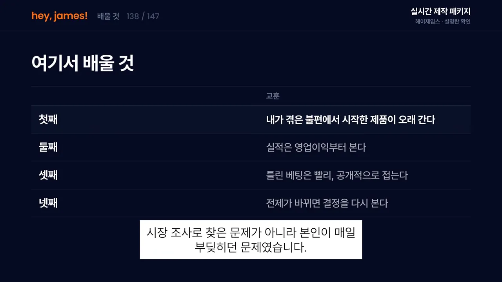
| 교훈 | 근거가 된 대목 | 영상이 덧붙인 말 |
|---|---|---|
| 내가 겪은 불편에서 시작한 제품이 오래 가요 | 배경색 하나밖에 못 바꾸는 프로그램에 질려서, 디자인을 전부 바꾸게 한 게 첫 기능 | 시장 조사로 찾은 문제가 아니라 매일 부딪히던 문제였어요 |
| 실적은 영업이익부터 봐요 | 2021년 순이익의 98%가 주식 평가이익 | 내 서비스도 이번 달 돈이 본업인지 일회성인지 나눠 봐야 다음 달 계획이 서요 |
| 틀린 베팅은 빨리, 공개적으로 접어요 | 2조 7천억 원 인수를 11개월 만에 0으로 적고 '내가 틀렸다'고 씀 | 보통은 조금 더 해 보자며 2~3년을 끌어요 |
| 전제가 바뀌면 결정을 다시 봐요 | React Native를 버린 이유는 '두 번 만들면 비싸다'는 전제가 사라져서 | 지금 쓰는 방식을 정한 이유가 아직 그대로인지 한번 볼 만해요 |
영상은 이렇게 맺어요. 개발자 한 명이 넉 달 동안 짠 코드가 227조 원짜리 회사가 됐고, 그 코드는 2026년에도 처음 쓴 개발 도구 위에 있어요. 그동안 이 회사는 도구를 바꾸는 대신 고쳐 썼고, 사람은 늘렸다가 다시 줄였어요.